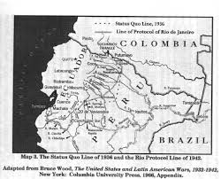

But also, it can refer to actions or events that didn´t happen at the point of time that ocurred in past.
PAST PERFECT-SIMPLE PAST
1.2. Past Perfect
Example
|  | By the time of the conflict with Perú, Colombia hadn´t been in any war before |
Notice that by the time gives a point reference in past about the war time
Notice that before gives a point reference in past that the action never happened previously
Obra publicada con Licencia Creative Commons Reconocimiento Compartir igual 4.0